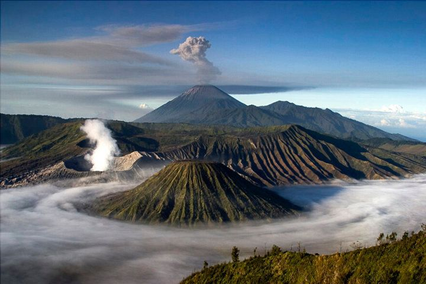
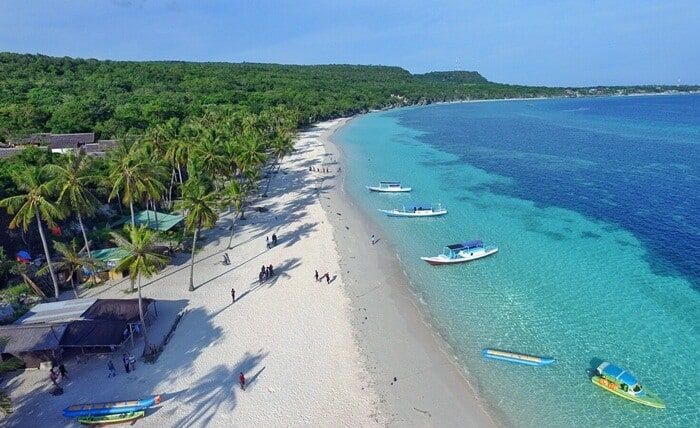
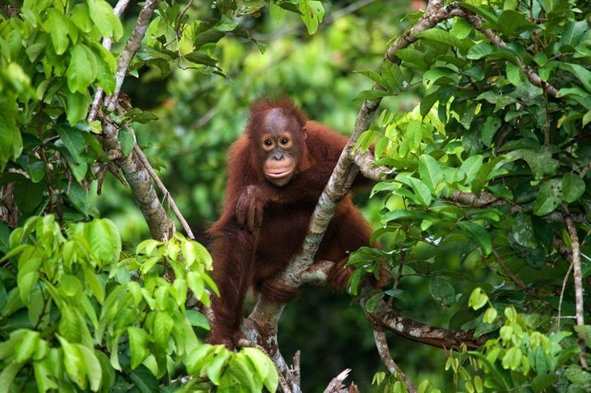
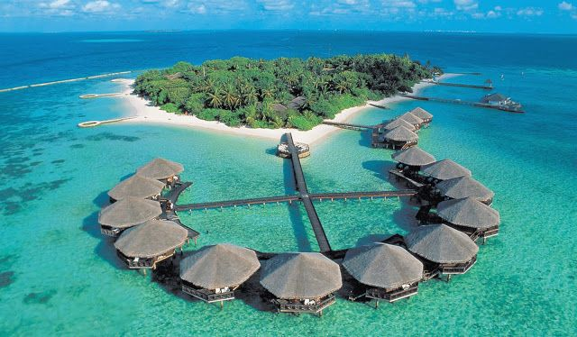

Indonesia adalah negara yang kaya akan keindahan alam, budaya, dan sejarah. Negara ini terdiri dari lebih dari 17.000 pulau yang membentang di sepanjang garis khatulistiwa.
Keberagaman geografis yang menakjubkan adalah surga bagi para pencinta alam. Dari sabang hingga merauke, negara ini memamerkan keindahan alam yang tak tertandingi. Pegunungan megah, pantai-pantai eksotis, hutan hujan lebat, dan pulau-pulau yang menawan semuanya ada di sini.
Dari pemandangan Gunung Bromo yang ikonik di Jawa Timur hingga pesona bawah laut Raja Ampat di Papua, Indonesia menghadirkan lanskap alam yang menggetarkan jiwa. Setiap sudut negara ini memberikan pengalaman alam yang unik dan mempesona, menjadikannya tujuan wisata impian bagi mereka yang haus akan petualangan dan keindahan alam.
Pegunungan yang Megah: Indonesia memiliki berbagai jajaran pegunungan yang mempesona. Salah satunya adalah Gunung Bromo, yang terkenal dengan kawahnya yang aktif dan panorama matahari terbit yang spektakuler. Gunung Rinjani di Lombok juga menawarkan trekking yang menantang dengan pemandangan danau kawah yang indah.
Pantai-Pantai yang Menakjubkan: Pantai-pantai Indonesia memukau dengan pasir putih, air biru jernih, dan kehidupan bawah laut yang luar biasa. Pantai Kuta di Bali adalah salah satu yang paling terkenal, tetapi ada juga Pantai Pink di Labuan Bajo, Pantai Belitung, dan Pantai Mandalika di Lombok yang tak kalah menarik.
Hutan Hujan Tropis yang Melimpah: Indonesia memiliki hutan hujan tropis yang luas, seperti Taman Nasional Gunung Leuser di Sumatra dan Taman Nasional Tanjung Puting di Kalimantan, yang menjadi rumah bagi satwa langka seperti orangutan.
Pulau-Pulau yang Menawan: Selain destinasi utama, banyak pulau kecil di Indonesia menawarkan keindahan alam yang tak terlupakan. Pulau-pulau seperti Bali, Lombok, Komodo, Flores, dan Sulawesi memiliki pantai, gunung, dan budaya yang memikat.
